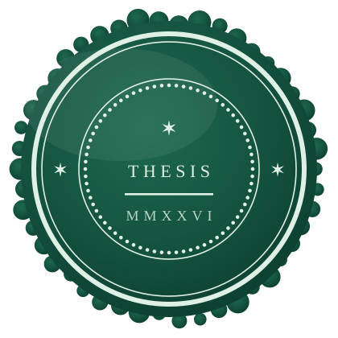

The thesis, by Chris Dias
Everyone in legal technology is racing to rebuild law firms around AI, and I am one of them. Some firms will call the result AI-native and some AI-hybrid. This is about the part the race keeps forgetting, whichever label a firm chooses: what it means to profess, why the word still describes every lawyer on the roll, and why it marks the line the machine should not cross.

There is not much left to argue about on direction. AI can now produce a competent first draft of an application, a letter, a research note or a piece of advice in minutes, at close to no marginal cost. New firms are being designed around that from their first day, and the SRA has already authorised a firm built to deliver legal services through AI. Clients notice the difference in speed and in price. A firm that carries on as though none of this is happening has made a decision, whether it admits it or not.
I am not writing to resist any of this. Lawyery, the firm I co-founded, uses AI tools built by our sister company Legalaid, supervises that work through Countersigned, and is certified AI-hybrid under NativeLaw's standard. I want the change. What I want to resist is a careless version of it, and my argument rests on one old word.
The market has started to sort firms into two kinds, and NativeLaw, which is one of my own ventures, gives them names. An AI-native firm has rebuilt every matter type so that the machine takes the first pass by default; on every matter, AI is compulsory. An AI-hybrid firm uses AI on some of its work and not on the rest, and leaves the call to the lawyer handling the matter. Neither is a ranking. A practice running thousands of near identical matters has good reasons to go native. A specialist practice whose work is mostly exceptions has good reasons to stay hybrid. Firms should choose with their eyes open and be honest about which they are.
What interests me more is what the two have in common, or ought to. In both, a named lawyer has to read, test and sign what the machine produces before it reaches a client. A native firm puts more output through that point and a hybrid firm less, but the point sits in the same place. The division I worry about runs across both categories. Some models, whatever they call themselves, treat the lawyer's knowledge as raw material to be captured and systematised, so that the firm and its agents can deliver it and the value stays with the firm when the lawyer leaves. I think that is the wrong turn, in a native firm or a hybrid one. The models worth building use the machine to make good lawyers better, and keep the client dealing with a person they chose.
The word profession has been worn smooth. We talk about professional footballers and professional kitchens and mean only that someone is paid. The older meaning is heavier, and lawyers of all people ought to remember it, because it is where we come from.
Profess comes from the Latin profiteri, to declare publicly: pro, forth, and fateri, to acknowledge, the root that also gives us confess. When it came into English it had nothing to do with work. To be professed was to have taken the vows of a religious order, aloud and before witnesses, binding yourself for life to a rule you did not write and could not amend to suit yourself. Only later did the word attach to divinity, law and medicine, whose members did something similar; they declared in public that they had mastered a body of learning, and bound themselves to duties that sat above their own interest and above the market.
For a solicitor in England and Wales that is still an accurate description of the job. We are admitted, and our names go on a public roll. We owe duties to the court and to the administration of justice that override our commercial interest and, where the two collide, the client's instructions as well. We answer to a regulator under rules we did not write, and striking off is the vow being unmade in public. Confidentiality that becomes privilege, advice that can be relied on, a signature that means somebody answers: all of it goes back to that public declaration, renewed every working day since.
When a client instructs a solicitor they are not paying for words on a page, however cheaply those can now be made. They are paying for judgement built up over years of cases like theirs and cases nothing like theirs; for qualifications that took the best part of a decade to earn and can be lost far more quickly; for rules and ethics that bind the adviser whether it suits them or not; and for a named person who answers for the advice to the client, the regulator and the court. People frame their admission certificates. I have yet to see anyone frame a chatbot transcript.
I started as a paralegal in 1998, qualified in 2001, and have spent all of that time in immigration law. What clients want from me has hardly changed. Is the relationship evidence enough? Will the business plan survive an endorsing body's scepticism? Appeal or reapply? Is the risk worth taking? The information needed to answer those questions has always been there for anyone prepared to read the Immigration Rules and the guidance. Clients were never paying for the information. They were paying for someone who had watched a great many of these cases succeed and fail, and who was prepared to put their name to a view.
So I describe the practice I want in two words rather than one. AI-native where it saves time and money: intake, document assembly, first drafts, consistency checks, research triage, the grunt work that filled my years as a paralegal and never deserved the hourly rates it was billed at. Professed wherever judgement and experience are being sought; wherever regulated advice needs a person to take responsibility; wherever the client needs counsel rather than output.
I use native there in its plain sense, a practice built with the machine in mind. Whether a firm then makes the machine compulsory on every matter or leaves it to the lawyer is the native or hybrid choice, and either can be done well. What neither can do is drop the second word.
The two halves need each other. The machine taking the first pass is what frees the lawyer for the part of the work that needed the vow. But the balance has to be designed in. Left alone, the economics will pull towards more automation and thinner supervision, because supervision is the expensive part. A firm that lets that happen has become cheaper rather than better, and sooner or later a client will pay for the difference.
There is broad agreement, across every field AI touches, that a human has to stay in the loop. I agree, and I think in law the agreement understates the problem. In most settings the human in the loop can honestly be a reviewer with a button: a moderator approving flagged content, an operator confirming an automated decision. The system around them carries the accountability, so a checkpoint is enough.
In law the human in the loop has to be someone who has professed. The machine can draft, research, assemble, check and compare, often very well. It cannot profess. It has taken no vow and sits on no roll; it owes the court nothing, holds no qualification that can be taken away, and loses nothing when it is wrong. So the line is drawn by what only a professed person can give, and the machine's capability has no bearing on where it falls. Output becomes legal advice when someone who has professed takes responsibility for it. A solicitor who approves output they have not properly engaged with has not carried the work over that line; they have signed for something they did not check.
The client's own protections are bound up in this. Privilege rests on confidence, and confidence is exactly what is put at risk when client material goes into a public AI tool whose terms nobody has read. Careless use of the machine can undo the protection that professing created.
There is a blunter test still: ask who answers when the rules are broken. A solicitor can be investigated, fined, suspended or struck off, and every one of us practises knowing that. Run the same test on the machine and nothing happens. There is nobody to bring before a tribunal and no roll to strike it from. Its maker is rarely in the room either; terms of use are drafted to keep liability narrow, and whatever indemnities the market begins to offer, no provider yet stands where the solicitor stands, in front of the client, the regulator and the judge. The regulator cannot discipline a model, so it disciplines the solicitor. The court cannot sanction a chatbot, so it turns on the lawyer who put the chatbot's invented authorities in front of it, as the Divisional Court made plain in Ayinde v London Borough of Haringey in 2025. Cleverer legislation will not close that gap. Regulation can only bite on someone capable of answering, and the only person in the room who can is the one who professed.
Insurance tells the same story from the other end. A solicitor must carry professional indemnity cover, so that when we get it wrong, and we do, the client is not left holding the loss. The machine cannot hold a policy. Insurers are already asking what AI does to a firm's risk and what evidence of responsible use they should see before they offer cover. I expect the answer to land somewhere predictable: a firm that can show a supervision discipline, with a record of what was checked and who signed, will be insurable, and a firm that lets machine output reach clients unread will be asking its insurer to underwrite a process nobody is watching. The market may draw the line before the regulator does.
So in law, human in the loop has to mean more than a checkpoint. It means review by someone qualified to disagree with the machine; a record of what was checked, changed and rejected; a named professional whose signature goes on the outcome and who carries the liability; and an ethical framework, as well as a workflow, for deciding when the machine should not be used at all. The machine may do everything up to the line. The line itself belongs to the professed.
Propose supervision and the objection arrives on cue: the human is the bottleneck. Output comes at machine speed, and a lawyer who insists on reading, testing and questioning it slows everything down. The observation is right and the complaint is muddled. A profession is a deliberate narrowing of who may advise, of what may be promised, and of how quickly anyone may reach a conclusion when a life or a business depends on it. Professions exist to serve, to specialise and to certify, and all three are promises of care rather than speed. We built the narrow place on purpose and put a person in it. Take the friction out everywhere else, and keep it there.
AI is not a religion, and its output is not revelation, however fluent the prose. Fluency is what makes misplaced faith so easy. Plausible words deserve what we give any persuasive witness, which is cross-examination. Checking the machine is how you take it seriously.
Part of the reason lies in what law is. It is not a database with the right answer waiting at the end of a query. It is a permanent, structured disagreement. Courts and tribunals exist because parties disagree about what the law is, what the evidence proves and whose interpretation should prevail, and every reported case records at least two qualified lawyers reading the same material and reaching opposite conclusions. Where something close to a settled answer exists, it holds until a higher court, a new statute or a better argument moves it. A machine can be trained to state the current consensus with great confidence. It cannot sit inside the disagreement and stake something on a side, and that is where law is practised.
Immigration lawyers know this as well as anyone. I have watched the Immigration Rules rewritten under my feet more times than I could count, and some of the best results I have had came from arguing that yesterday's settled position should not survive today's facts. A system trained on yesterday's law will reproduce it beautifully. Often the lawyer's job is to know when it should not be reproduced at all.
There is a harder point underneath. A law can be validly passed, on the statute book and enforced by the courts, and still be wrong. Apartheid was law. Slavery was law. Colonial rule was administered through carefully drafted legislation enforced with complete procedural correctness. A machine asked what the law was would have answered faithfully and accurately. It took people to see that lawful and just are different words and to fight the gap between them, in courtrooms and outside them, with lawyers often among those doing the fighting. Applying the law while refusing to mistake it for justice takes a conscience, and a conscience comes with a person. Law is made by people for people, remade when they change their minds and resisted when they find the nerve. The lawyer has to be a person too.
I should be straight about what this is. It is not an academic paper, and I do not claim the ideas in it are original. Plenty has been written about judgement as the bottleneck of the AI age, though mostly as a problem to be engineered away. Philosophers have argued about the gap between lawful and just for centuries, and legal scholars wrote about the indeterminacy of law long before anyone trained a model on it. Even the manifesto's form is borrowed. Rome wrote the Twelve Tables because the plebeians would no longer live under law that existed only in patrician memory, and commitments written down in public, where they cannot quietly be rearranged, are about the oldest legal technology there is. What I can offer is a practitioner's sense of where pure logic runs out, written down at a moment when the industry seems keen to forget it.
The lack of novelty can be checked, because the mapping has been done. Set the twelve declarations against the rules that already bind lawyers in England and Wales, the SRA Standards and Regulations and the BSB Handbook, and almost every one turns out to be an existing duty in other words: accountability for work done through others; the duty not to mislead; the properly arguable threshold; confidentiality; compulsory insurance; the requirement to be able to justify what you did. Both regulators have said the same of AI. Neither has written new rules, because the existing duties already reach the machine. The mapping is on this site, provision by provision. None of it asks the profession to rewire itself. It asks the profession to reread what it already promised.
The law has always been open about its own flaws. A right of appeal is the system admitting that its first answer may be wrong, and a dissenting judgment keeps the rejected argument on file in case the future needs it. The law survives and changes because of that imperfection. People are imperfect in the same way, and so is nature; nothing evolves that was already finished.
AI is a product of people and of nature. It is trained on our words, our judgments, our contradictions and our mistakes, and built by imperfect makers from imperfect material. It inherits our flaws at scale and at speed, wrapped in a fluency that hides them. That is no scandal, but it does mean the machine cannot be the fixed point the system checks itself against. Only someone who knows they are fallible, and has promised in public to answer for it, can do that. The law settled the question seven centuries ago, and its answer was to make its practitioners profess.
Much of this is hard to see from outside the profession, and outside is where the money now sits. To a technology company, law looks like any other services industry waiting for its software moment: documents in, documents out, high prices, slow delivery and margins wide enough to arbitrage. To venture capital it is the next great vertical, a market the pitch decks measure in hundreds of billions and guarded by little more than a guild and its habits. From that height the old structures and the stubbornly human ways of working look like the inefficiency, and the easiest target in the economy.
I understand the view, and I am not writing from behind the moat. I have been enthusing about technology in law for years, and I now build it. Some of the outside view is plainly right; the profession has sheltered real inefficiency and nobody needs to mourn it. The mistake is to take the inefficiencies for the whole of law. The roll, the vow, duties that outrank both the client and the market, the privilege that protects what a client tells their lawyer: none of these arrived by accident, and none survives on sentiment. Each was built and kept by people who had seen what happens without it. You learn that by practising, and it is hard to learn any other way.
Strip it out in the name of disruption and you may get something fast, cheap and fluent, but it will be a product shaped like law, binding nobody and answering to nobody, with no one professed behind it when it goes wrong. I would rather see AI built for what law actually is, in native and hybrid firms alike: the machine given everything up to the line, and the vow kept on the other side of it. That is harder to build and slower to sell. I still think it is the only version worth building.
People sometimes assume the two halves of my working life sit oddly together: a quarter of a century of immigration practice on one side, and legal AI on the other. To me they only make sense together. Technologists can build the loop. Practitioners know what the human in it has to do, because we are the ones who professed. Every piece of work I have sent out since my admission has carried my name, and that line of ink is more than a signature. It is the vow, renewed one client at a time, and I am not handing it to the machine.
The machine can draft. A lawyer can profess.
Declaration II
The thesis in twelve declarations, set down plainly as a line in the sand. Then see where the idea is already being put to work.
Read the manifesto See it in practice